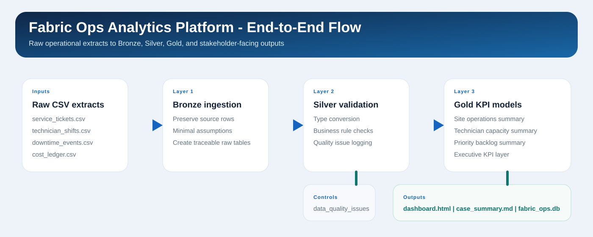

Open backlog
259
Portfolio case study for a Microsoft Fabric style operations analytics platform with Bronze, Silver, and Gold layers for backlog, SLA, downtime, workforce, and cost visibility.
Objective: turn disconnected service and maintenance extracts into a decision-ready operations scorecard.
Start with global KPIs, compare site performance, then inspect backlog pressure, capacity strain, and quality gates.
Raw extracts -> Bronze ingestion -> Silver validation -> Gold KPI models -> HTML scorecard.

Shows where operational cost accumulation is building fastest across the network.
| Site | Open backlog | SLA breaches | Avg utilization | Downtime | Cost | Risk |
|---|---|---|---|---|---|---|
| RIO Rio Service Hub |
67 | 26 | 80.3% | 54.6 | $21,716 | 100 |
| MCZ Macae Offshore Support |
62 | 23 | 84.3% | 47.6 | $21,906 | 100 |
| VIX Vitoria Operations Base |
65 | 27 | 78.4% | 50.0 | $20,798 | 100 |
| SSA Salvador Reliability Center |
65 | 24 | 83.7% | 43.4 | $18,839 | 100 |
electrical
86.0% utilization | 8.2h overtime
rotating
84.6% utilization | 16.4h overtime
inspection
84.0% utilization | 22.0h overtime
reliability
81.4% utilization | 7.6h overtime
electrical
80.6% utilization | 6.2h overtime
This layer summarizes open work concentration by priority and highlights source issues caught before business consumption.